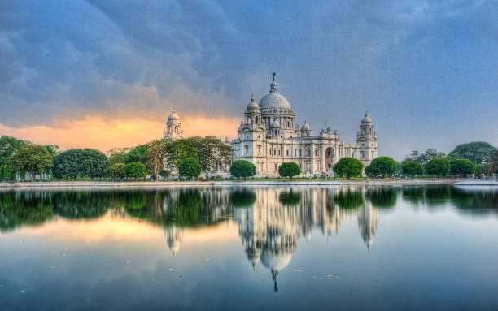

The city's colonial past is reflected in landmarks like the grand Victoria Memorial and the bustling Park Street. Kumartuli, the artisan hub, comes alive before Durga Puja as skilled craftsmen sculpt magnificent idols. The Indian Museum and College Street, home to the historic Coffee House, celebrate Kolkata’s deep intellectual and literary heritage. The city’s tram rides and hand-pulled rickshaws add a nostalgic charm, coexisting with modern skyscrapers and shopping malls. Whether through its street food, festivals, or cultural vibrancy, Kolkata continues to captivate visitors with its timeless appeal.
